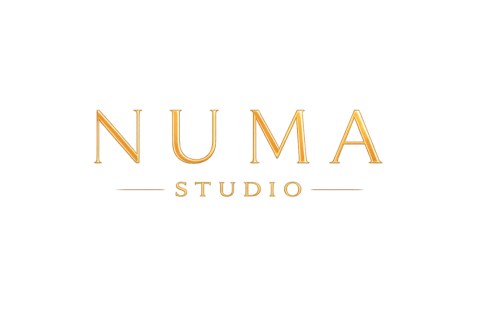
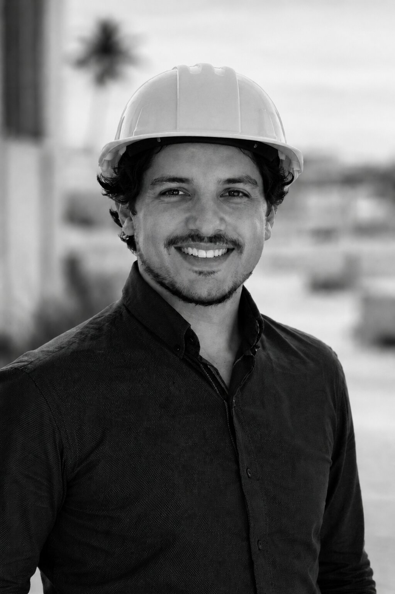

NUESTRA HISTORIA
NUMA STUDIO nace de la idea de que cada proyecto representa algo más que un espacio: representa una visión, una meta y una historia personal. Entendemos que detrás de cada idea existen años de esfuerzo, sueños y decisiones importantes, por eso creemos que la arquitectura debe construirse con sensibilidad, honestidad y atención a cada detalle.
Más que diseñar espacios, buscamos acompañar a las personas en el proceso de transformar aquello que imaginan en algo real, creando proyectos capaces de transmitir identidad, propósito y permanencia.
NUESTRA FILOSOFÍA
En Numa Studio creemos que la arquitectura no es solo forma, sino emoción y narrativa. Cada proyecto debe contar una historia, expresar sentimientos y transmitir valores. Queremos que quienes habitan nuestros espacios sientan su esencia, desde la primera mirada hasta cada detalle interior.

FUNDADOR
Marco A. Sánchez C., arquitecto originario de Acapulco de Juárez, Gro., con formación en la Universidad Nacional Autónoma de México. Desde 2012 ha desarrollado su trayectoria colaborando con expertos y trabajando de manera independiente, aplicando experiencia en dirección de proyectos, costos y obra.
MISIÓN
En NUMA STUDIO, nuestra misión combina pasión, integridad y aprendizaje. Acompañamos a los clientes a lograr proyectos que transmitan emociones y cuenten historias, valorando tanto el proceso como el resultado final. Al mismo tiempo, compartimos conocimientos y recursos con otros profesionales, buscando inspirar, enseñar y fortalecer la práctica de la arquitectura con honestidad y dedicación.